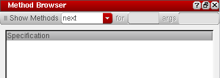
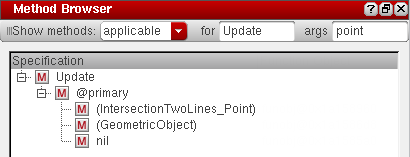
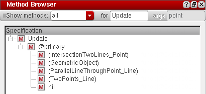
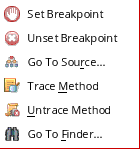

Using the Method Browser Assistant
Use the Method Browser assistant to view the method trees of generic functions. You have the option to view all existing methods for a generic function, all applicable methods for a generic function, or only the methods that would be called next in the current function call.
To browse the method tree for a generic function:
-
Choose Window – Assistants – Method Browser. The Method Browser assistant displays.
 -
Select one of the following options from the Show methods drop-down list:
-
Select next to view the methods that will be called next in the current function call.
-
Select applicable to view all applicable methods for a given generic function. In the for field, type the function name for which you want to view the applicable methods and in the args field, type the variable that takes on the value of the method’s argument at runtime.
-
Select all to view all existing methods for a given generic function. In the for field, type the function name for which you want to view the methods.The next and applicable options work only in the context of a debug run.
-
Select next to view the methods that will be called next in the current function call.
-
Depending on the option you select in the Show methods drop-down list, the results pane displays the method tree for the given generic function.
Different method types are identified by different icons in the method tree. For example, primary and top-level methods are identified by the icon, @around methods are identified by the icon, @before methods are identified by the icon, and @after methods are identified by the icon. -
View the method tree using the Search toolbar, as described below:
Method Tree Context-sensitive menu
After the method tree is populated, you can right-click a method name and choose one of the following options:

- Set Breakpoint: To set breakpoints on the selected method.
- Unset Breakpoint: To unset the breakpoint set on the selected method.
- Go To Source: To view the method definition in the source file. If the source file for the method is not loaded in debug mode, an error message displays instead.
- Trace Method: To trace the selected method using the Trace Assistant.
- Untrace Method: To untrace the method selected in the Method Browser.
- Go To Finder: To check the method definition in the Finder Assistant.
Related Topics
Using the Step Result Assistant
Using the Code Browser Assistant
Return to top